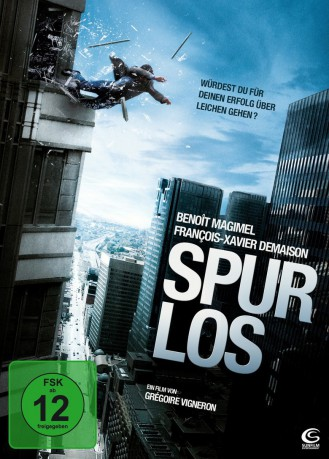

#3223 Spurlos
Alternativ: Traceless (Englischer Titel)
 
 IMDB-Wertung: 6.4 / 10
IMDB-Wertung: 6.4 / 10  Metascore: 0
Metascore: 0 
Topmanager Étienne hat Großes vor sich: Der Posten des Chefs wird frei werden und er ist der beste Anwärter darauf. Zum finanziellen kommt auch das private Glück, ist er doch mit der hübschen Clémence liiert. Allerdings gibt es da gewisse Geheimnisse aus seiner Vergangenheit, die urplötzlich ans Tageslicht zu geraten drohen. Und dann ist da auch noch ein seltsamer Freund aus Étienne's Jugendzeit, mit dessen Auftauchen der Alptraum erst beginnt ...
Jahr: 2010
Dauer: 95 Minuten
FSK: 12
Land: Frankreich Studio: Sunfilm EntertainmentTonspuren:
Untertitel:
Auflösung: 1080p (1920x824) Größe: 7792 MB
Genre: Thriller, Drama, Krimi
Regisseur: Grégoire Vigneron
Drehbuch: Laurent Tirard, Grégoire Vigneron
Soundtrack: Christophe Lapinta
Darsteller:
Datei: X:\2010(N-Z)\Spurlos (2010, FSK12, 1920x824).mkv seit 19.02.2016
Festplatte: HD 2010(G-Z)-2011(A-F)
 Es gibt insgesamt 115 Filme in der Gruppe '2010(N-Z)'
Es gibt insgesamt 115 Filme in der Gruppe '2010(N-Z)'